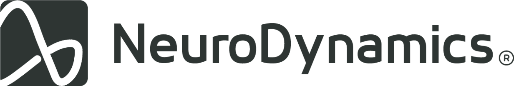

Sete cabeçalhos para e-mails NeuroDynamics, prontos para copiar.
1. BLOCO ESCURO, FOTO COM MANCHETE
Outubro de 2026
Pesquisa e desenvolvimento
Sinais mais limpos, decisões melhores
2. BLOCO CLARO, FAIXA DE TÍTULO
Outubro de 2026
Simpósio de Neuroengenharia 2026
Inscrições abertas até 12 de novembro
FOTO 510×256
3. FUNDO ESCURO INTEIRO
Outubro de 2026
Relatório trimestral
FOTO 510×279
Três protótipos validados e um novo laboratório em operação
4. FUNDO BRANCO, FOTO COM MANCHETE
Outubro de 2026
Relatório trimestral
Três protótipos validados
5. BLOCO ESCURO, MANCHETE GRANDE
Outubro de 2026
Bem-vindos ao laboratório
FOTO 510×296
6. FUNDO BRANCO, TOM NEUTRO

Outubro de 2026
4 de outubro de 2026
Nova rotina de acesso ao biotério
7. SÓ FOTO, LOGO SOBREPOSTO
Outubro de 2026
Tecnologia que escuta o corpo
Pesquisa e desenvolvimento